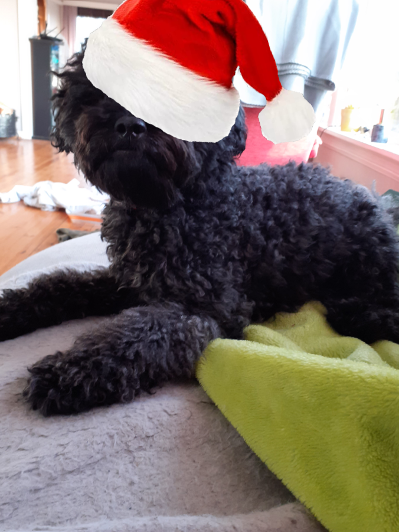

Om meg!
Hei! Jeg heter Magnus Andreassen. Jeg er en elev på Sam Eyde VGS, på IM linjen. Jeg er skikkelig interessert i å lære, og er spesielt interessert i software og programmering Hello! My name is Magnus Andreassen. I'm a student at Sam Eyde VGS, in the IM course. I'm super interested in learning and especially interested in software and programming
Yrkeserfaring
- TBD
Prosjekter
- Denne nettsiden
Utdanning
- Sam Eyde VGS - (2025-2027) | Videregående | IM + IT linje

Personlig interesser
Spill
Jeg er veldig glad i spill. Dataspill er en av mine hobbyer, som jeg er ganske interessert i. Jeg liker spill jeg kan spille alene, men å spille med andre er også gøy. Jeg spiller primært på datamaskiner, om du vil så kan du se på min Steam Profil.